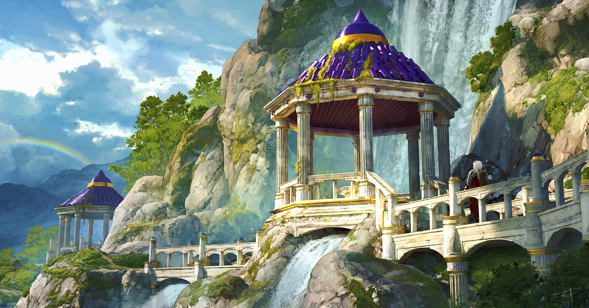

Undergraduate Capstone
In my final capstone project, I am undertaking the task of creating a captivating 3D environment inspired by the concept art of Max Suleimanov. This endeavor involves a meticulous process encompassing various software and techniques to bring the envisioned scene to life.To Start, I will employ Blender for the modeling and sculpting of the buildings.For the natural elements, such as cliffs and rocks, I plan to utilize Megascans within the Unreal Engine.To simulate the waterfall realistically, I will leverage the power of Houdini and its flip fluid tools.

Max Suleimanov, Pavilion (Reference Image)
Weekly Project Updates: week 1, January 19-26
 Most recent update for week 1-2
Most recent update for week 1-2
This week, I worked more on completing the buildings for the 3D environment. My goals for the end of this week are to finish the base structure of the building and begin sculpting the details, such as wear and tear and cracks. Furthermore, after talking to my mentor, he suggested that I use Megascans for the cliffs instead of modeling them from scratch. Additionally, he recommended creating a procedural system in Houdini that will generate cracks and damages on my building. I will be incorporating his suggestions into my project.